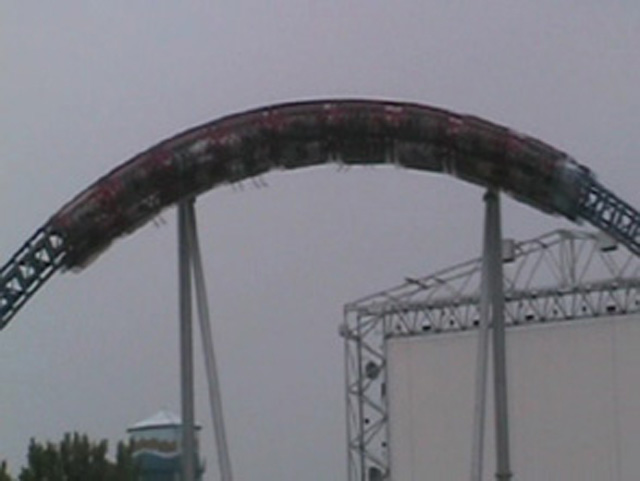

| |
Millenium Force Review

We're here at Cedar Point, where we will be riding the ever so lovely Millenium Force today. You'll probably recognize it as that big blue roller coaster shown on TV frequently. After hearing all the hype about how this is "THE BEST RIDE EVER!!!" (Hey! That's Pony Express you jackasses!), we climb into the seats. We then buckle the seatbelt, pull down the lap bar, and we're off. We start by going up the lifthill. Now this lifthill is different from most lifthills as it is using a cable to pull us to the top. During this lifthill, you can get a fantastic view of Cedar Point and of Lake Erie. Then when roll over the top and into the famous first drop. At this part of the ride, you're mind goes into falling mode. This is a state of mind where all emotions, thoughts, and brain activity are put on hold and the only thing you can think about is the fact that you're falling. Now you do get good airtime on the drop. However, because we're in Falling Mode, it doesn't matter. For a while, the closest thing to Milleniun Force's first drop would have to be Bungee Jumping. The only real difference is that Bungee Jumping also includes the illusion of death, which is a big plus in my book. But now, with other giga coasters being built, similar first drops can be found on other rides. And while this is a fantastic first drop, it is not the greatest first drop in all of mankind like the Cedar Point Fanboys will tell you. That belongs to X2. By this point of the ride, we have completed the first drop and are now ripping through a giant overbanked turn at lightning speeds. We've also gotten out of falling mode and now have our mind back. We now notice the lightning speeds we are taking the overbanked at. After the overbanked turn, we zoom away from the famous first drop and sprint into the first tunnel. Of course, we're in and out of there very quickly due to how fast we're flying. But it's still very cool. We now fly up into the first hill. We expect airtime at the top. And to be fair, there is some. The problem is that it's just mild floater air. Yeah, you know all that stuff about the amazing airtime on Millenium Force, that's all Cedar Point Fanboy Bullsh*t. Very overhyped. However, we do notice that the hill did not take away any of our speed (Or at least it seems that way). We are still traveling at the same lightning speeds that we were going at when leaving the first drop. We then fly through some sort of twistyness. However, we don't feel any lateral Gs through all this. We just keep on feeling the speed. We can still feel the pure raw speed. Then, we then go through the second overbanked turn. It kind of feels like Xcelerator as we just fly through it. Still running as fast as we were at the bottom of the first drop, we go into another hill. Just like the first hill, it's just mild floater air. We fly through it as if it were straight track. We then fly through the second tunnel. After zooming out of there, enjoying all the echoing of people screaming, we head straight into a small little bunny hop. There is actually a nice pop of airtime here. Yeah. Millenium Force has a good pop of airtime. But come on! You're in the same park as Magnum XL 200, Steel Vengeance, and even Maverick! You should know what amazing airtime is like. After zooming through a few more curves, we rip through the final overbanked turn as if it were nothing. We then slam into the brake run. While Millenium is a very fun ride with a magnifiecent first drop, it is not the ride Cedar Point Fanboys claim it is. Honestly, after the first drop, it kind of feels like a giant blue powered coaster progamed to go 90mph. But hey, even if it's not the amazing ride you hear about on TV, I'd still recommend riding this if at Cedar Point. You will have fun. I know I bash Millenium Force a lot as a sort of backlash to the constant high reviews that this ride gets. But for all my harsh words, I do have to reassure everyone that it's a fun ride. A very fun ride that you are going to enjoy. I can guarantee you that.
8/10
Location: Cedar Point
Opened: 2000
Built by: Intamin
Last Ridden: June 20, 2021
Millenium Force Photos





Home
|